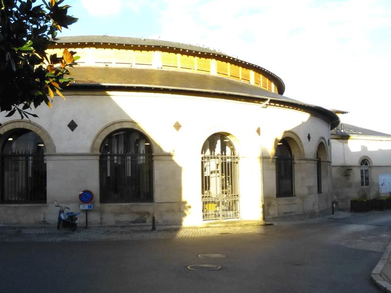
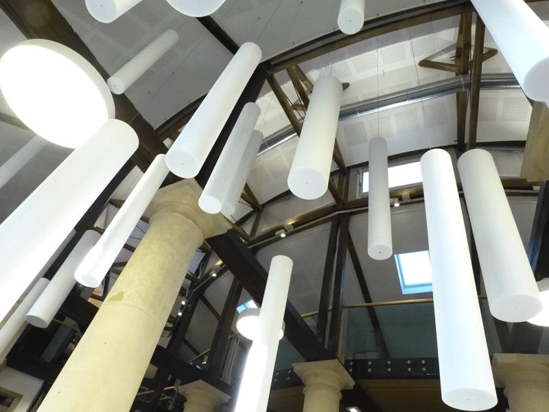
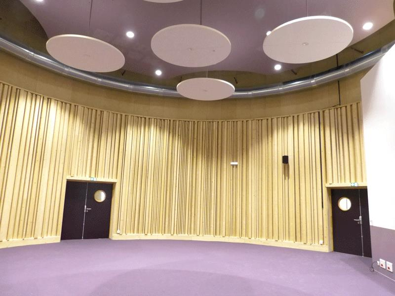
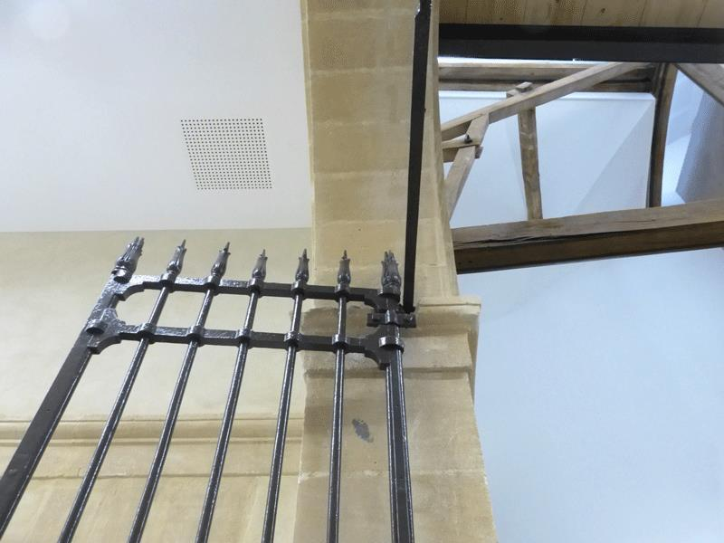
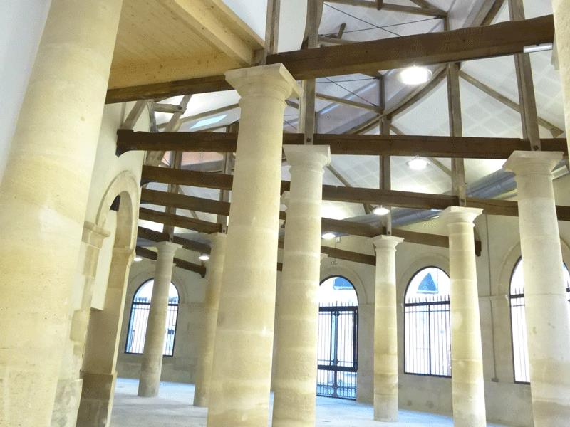
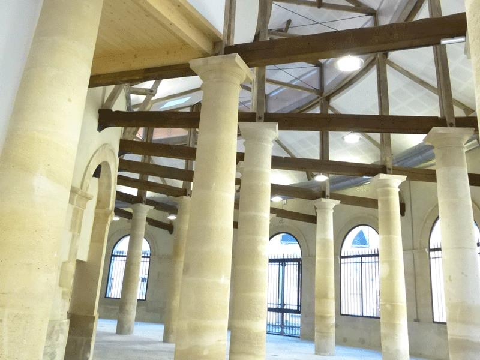
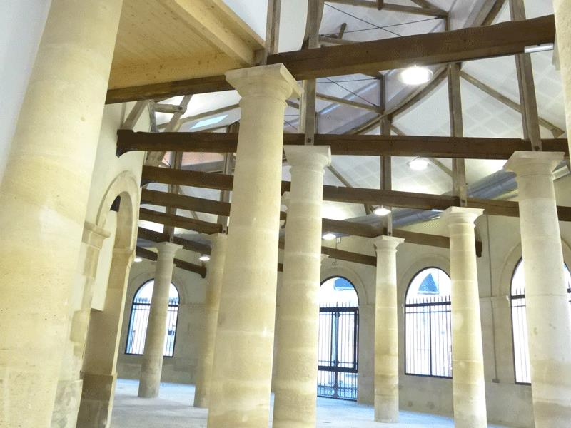

1. Aménagement des halles de Bonnetable en école de danse et de musique (72)
2. Aménagement d'un pôle intergénérationnel dans la halle au blé - Sées (61)
Mediatheque – 61500 SEES
Maître d’ouvrage : Public
Année : 2017
Coût global de l’opération: bâtiment 2 000 000€ HT et 90 000 € HT mobilier
La Halle, d'une belle facture en forme de rotonde, date de 1836. Elle se compose d’un avant-corps avec emmarchement et hall d'entrée principal sur deux niveaux, d'un anneau circulaire de 35m de diamètre, d'un noyau central aveugle de 10m de diamètre. Le projet a consisté en l’aménagement et le réaménagement des espaces afin d’accueillir 4 pôles : Médiathèque, Espace Agora, EPN et Salles pour les associations. La médiathèque proprement dite est développée sur 3 Niveaux de la moitié Est de la rotonde. Dans la moitié Ouest, se développe L’Agora, un grand espace de plain-pied pouvant accueillir des manifestations publiques. Un espace polyvalent a été aménagé dans le silo central.




 


3. Aménagement de la médiathèque dans la halle aux grains ville de Mortagne au Perche (61)
4. Siège de l'Association des Chasseurs de l'Orne à Silly-en-Gouffern (61)
5.Construction d'un restaurant scolaire pour l'école Pierre Rasse Mathieu (14)
6. Aménagement et extension de la salle de la jeunesse de Montabard en centre culturel rural (61)
7. Pole Santé pluridisciplinaire Mortagne-au-Perche (61)
8. Aménagement de la médiathèque dans la halle aux grains ville de Mortagne au Perche (61)
9. Crêche à Ecouché (61)